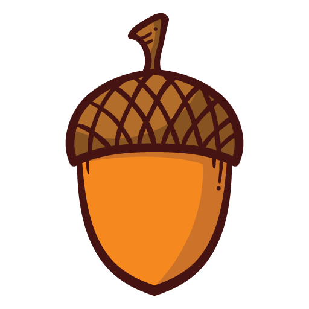
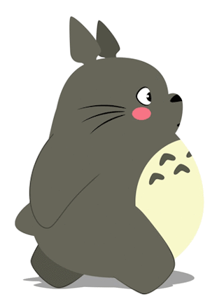

Les résultats se situent juste au dessus de la barre pour changer la difficulté (voir plus bas).
Les bonnes réponses :
Le nombre de bonnes réponses que l'élève a données.
Total :
Le nombre d'additions qu'il y a dans le cycle.
Essais :
Le nombre de tentatives que l'élève a faites.
2) La dificulté :
Pour changer la difficulté , il suffit de bouger la petite barre en bas de l'écran comme celle ci :
Difficulté : 2 10
à 2 la difficulté est faible et à 10 élevé. La valeur sélectionnée permet de spécifier la valeur maximum de chaque tirage aléatoire de nombre. ⚠ La difficulté change aussi le nombre total d'additions dans le cycle. (8 pour la difficulté 2 et 40 pour la difficulté 10)
3) Les récompenses :
Les glands apparaissent toutes les bonnes réponses 
Et les Totoro tous les multiples de 4. (Au passage il prend les glands sur son chemin. D'où le sac)
Tandis que le gros Totoro apparait seulement à la fin de la dictée 
4) La fin d'un cycle :
Un cycle se termine lorque le nombre de bonnes réponses est égal au nombre "total". ( Finished ! sera écrit.)
5) Pour l'élève
Il doit cliquer sur le bouton où la réponse de l'addition lui semble correcte (logique).
S'il se trompe le programme lui dira si la réponse est supérieure ou inférieure à son choix.
S'il trouve la bonne réponse alors l'élève gagne un gland et ainsi de suite (voir la partie récompenses).
si l'élève n'entend pas la question ou a besoin de réentendre, il lui suffit de cliquer sur le 🔊.
Comment utiliser le programme de Dictée
Les parties 1, 4 et 5 sont identiques au programme de Math
Sauf que l'élève doit écrire les réponses et ne gagne pas de gland ni de Totoro.
1) Créer / charger / éditer une dictée
Créer une dictée
Le programme permet en premier lieu de créer autant de dictées que vous voulez.
Pour cela allez dans la partie professeur dans le menu (à gauche du bouton manuel).
Ensuite il suffit de suivre les instructions du document.
Charger une dictée
Maintenant, vous voulez que l'élève se fasse dicter votre dictée ? Rien de plus simple !
Allez dans la partie dictée (pour l'élève), et écrivez dans la zone de texte le nom de votre dictée. Ensuite cliquez sur ce bouton :
Et voilà !
Éditer une dictée
Vous avez créé une dictée mais vous voulez ajouter des mots ou des phrases à l'intérieur de celle ci ?
Allez dans la partie professeur, et vous pouvez voir 2 boutons.
Le premier bouton vous permet de charger la dernière dictée créée pour la modifier.
Si votre dictée n'est pas la dernière que vous avez créée, il vous suffit de marquer dans la zone de texte un peu plus à droite le nom de la dictée et d'appuyer sur le second bouton.
Vous pourrez la modifier sans aucun problème ⚠ Si vous enregistez 2 dictée sous le même nom alors seulement la dernière sera retenue.